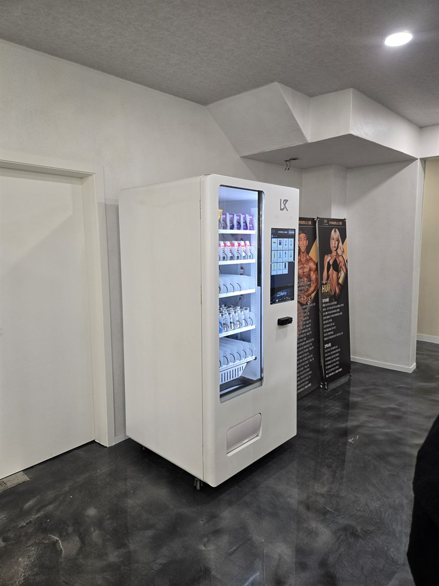
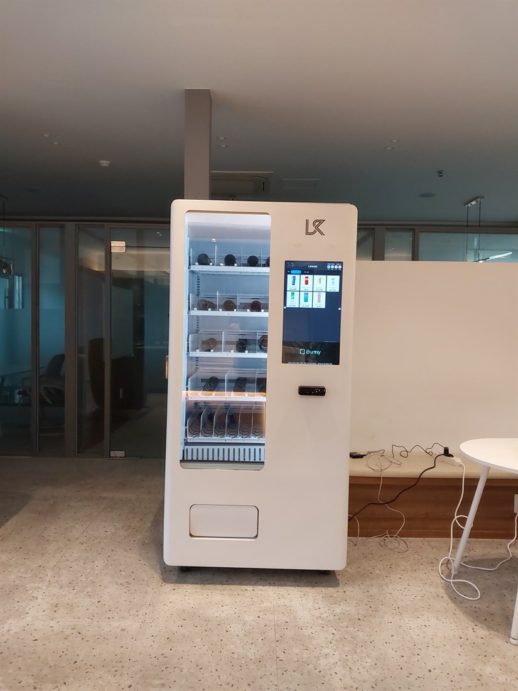
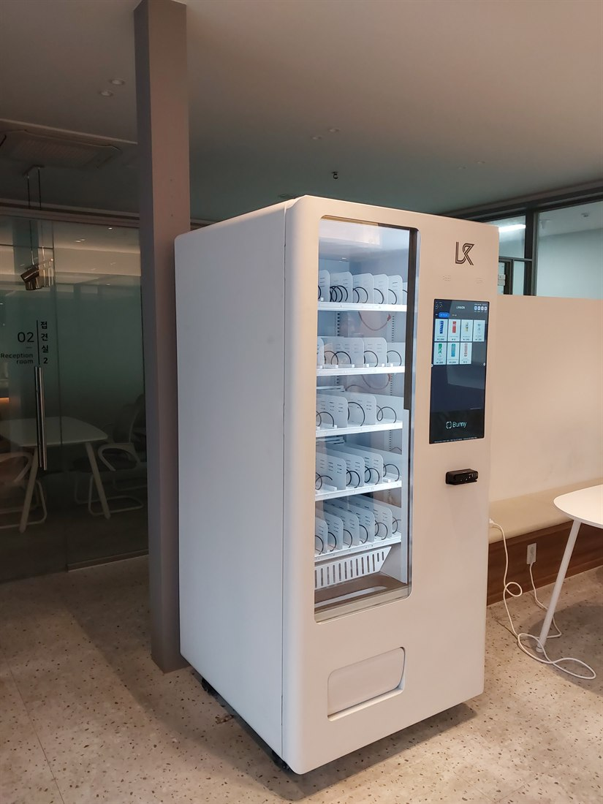

헬스장 무인자판기 설치 안내 — 프로틴·음료 자판기 완전정리

헬스장은 무인자판기가 거의 필수처럼 자리 잡은 곳입니다. 운동 전후로 회원들이 물·이온음료·프로틴을 찾는데, 매번 밖에 나가 사 오기 번거롭기 때문입니다. 관장님 입장에서도 카운터가 일일이 음료를 내주지 않아도 되고, 인건비 없이 24시간 부가 매출이 붙습니다. 이 글은 헬스장 무인자판기 설치를 알아보는 관장님·사장님을 위해, 무엇을 넣고 어디에 두고 어떻게 알아봐야 하는지 꼼꼼하게 정리한 안내입니다.
1. 헬스장 자판기, 뭘 넣나 — 프로틴이 핵심
헬스장·피트니스 회원은 일반 매장과 품목이 다릅니다. 가장 잘 나가는 건 단연 프로틴 계열입니다.
• 프로틴 음료·단백질음료 — 운동 직후 수요가 가장 큽니다.
• 프로틴바·단백질바, 닭가슴살 — 간편 단백질 간식.
• 이온음료·제로음료·생수 — 수분·전해질 보충.
• BCAA·아미노산·에너지음료 — 운동 중·전 섭취.
• 단백질 쉐이크·프로틴 쿠키, 견과·간식까지 함께 채웁니다.
즉 헬스장 자판기는 사실상 프로틴 자판기로 운영됩니다. 회원층(다이어트·벌크업·재활)에 맞춰 품목을 조절하면 회전이 더 빨라집니다.

2. 냉장 무인자판기가 기본
프로틴 음료·이온음료·생수는 시원해야 잘 팔립니다. 그래서 헬스장 자판기는 냉장 무인자판기(냉장자판기)가 기본입니다. 여름철 아이스크림이나 냉동 단백질 간식을 넣고 싶다면 냉동자판기를 더하거나, 한 대에 냉장·냉동을 나눈 멀티자판기로 구성할 수 있습니다. 화면에서 고르고 카드로 결제하는 스마트 자판기라 품목·가격을 쉽게 바꿀 수 있습니다.
3. 헬스장에 자판기가 좋은 이유
① 회원 편의 — 운동 중 필요한 걸 밖에 안 나가고 바로 구매.
② 부가 매출 — 회비 외에 자판기 매출이 그대로 순수입.
③ 인건비 0원 — 무인으로 24시간 운영, 새벽·심야 회원도 이용.
④ 카운터 부담↓ — 직원이 음료 판매·계산에 손 안 뺏김.
⑤ 이미지 — "여긴 프로틴도 다 있다"는 편의가 재등록·만족으로 이어집니다.
4. 어디에 설치하면 잘 되나
프론트(데스크) 옆이 1순위입니다. 등록·상담하며 자연스럽게 보이고, 운동 후 나가는 길목이기 때문입니다. 라운지·휴게공간, 탈의실·샤워실 앞, GX룸·필라테스룸·스피닝룸 입구도 좋습니다. 냉장 자판기라 전원 콘센트와 한 칸 공간만 확보되면 설치됩니다.

5. 결제·운영은 이렇게
회원은 현금을 거의 안 씁니다. 카드·삼성페이·카카오페이·네이버페이·QR을 모두 받아야 매출을 놓치지 않습니다. 재고·매출은 원격으로 확인해, 어떤 프로틴이 잘 나가는지 보고 채우면 됩니다. 무인이라 인건비가 없고, 정산도 자동으로 집계됩니다. 필라테스·크로스핏·PT샵·GX골프처럼 운동 관련 매장은 같은 방식으로 잘 맞습니다.
6. 임대·구매와 수익, 이렇게 알아보세요
초기 부담이 크면 임대(렌탈)로 월 이용료만 내고 시작해 매출로 회수하고, 자리가 검증되면 구매가 총비용이 낮습니다. 설치업체를 고를 때는 아래를 확인하세요.
① 설치비·기기 비용(구입·렌탈·임대)
② 냉장·냉동 옵션(프로틴·음료 냉장 필수)
③ 카드·삼성페이·QR 결제 지원
④ 재고·매출 원격 관리
⑤ 프로틴 등 품목 컨설팅과 매입 안내
⑥ 빠른 A/S
⑦ 헬스장 규모·회원 수에 맞는 대수 제안
7. 헬스장 무인자판기, 이렇게 시작하세요
H포스는 설치비 무료로 헬스장·피트니스·필라테스·크로스핏에 맞춰 프로틴 자판기(냉장 무인자판기)를 구성해 드립니다. 프로틴 음료·단백질음료·프로틴바·닭가슴살·이온음료 등 회원이 찾는 품목으로 채우고, 카드·간편결제 연동, 원격 재고·매출 관리까지 세팅합니다. 임대·구매 중 수익에 맞는 방식도 함께 정합니다. 헬스장 위치·회원 규모만 알려주시면 예상 품목과 대수까지 무료로 상담해 드립니다.
📞 헬스장 무인자판기·프로틴 자판기 설치 상담 010-6832-1994